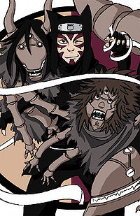

Kankurou
 De: La Frikipedia, la enciclopedia extremadamente seria.
De: La Frikipedia, la enciclopedia extremadamente seria.
| De la serie Naruto y sus movidas:
|
| Kankurou
|
|
|
| Kankurou a punto de desenrrollar a su marioneta para "enrrollarse" con ella.
|
|
| Aldea
|
Villa de la arena
|
| Nivel
|
Jounin
|
| Tipo de chakra
|
Marionetil
|
| Técnica favorita
|
Teatrillo no jutsu
|
| Malo o Bueno
|
Al principio malo y rarito, después sólo rarito.
|
| Objetivo
|
Conseguir más marionetas. Sí, marionetas muchas marionetas. Sólo mías. Mi tesoro.
|
| Notas
|
Se hizo marionetista, no para entretener a las masas, ni porque fuera débil en el combate cuerpo a cuerpo, sino para liarse con sus marionetas.
|
«Soy Marionetista Profesional»
~ Kankurou Concientizando que sirve de "algo"
«¡¡He dicho que no son muñecas, son figuras de acción!!»
~ Kankurou Demostrando que aun conserva su "hombria"
Es el marionetista de la serie Mari Carmen y Doña Rogelia, y de ahí su pasión por las marionetas.
Infancia
Nació con un vestido negro, pintado como una ramera barata niña y con una marioneta debajo del brazo ,o sea, que ya era travesti de nacimiento (es rarito, pero más lo es Shino). Creció en un mundo que giraba en torno a su hermana Temari (eran hermanos, pero él fue uno de los primeros en tirársela) y a su hermano Gaara (que era aún más rarito que él). Pronto sintió cierta atracción por las marionetas (ya se sabe, empezaban a desaparecer de las tiendas y si reaparecían, venían empapadas de lefa, aunque él ponía la excusa de que las usaba para luchar).
Kankuro era un niño mimado por su padre, este le compraba todo y le llevaba mujeres todos los dias a su cuarto para que practicara su sexualidad. Pero despues de leer el libro de Pinocho se decidió por las marionetas. Pintarrajeándose la cara para salir al trabajo de travesti a pelear
Una noche Kankuro caminaba por las calles cuendo se encontró a la Vieja Chiyo-Na y esta al verlo como jugaba con sus marionetas muy extrañamente, le recordó a su nieto Sasorinocho..., lo invitó a su casa y le enseño el arte del mundo titiritero ya que no tenia otra cosas mejor que hacer y nada lo motivaba en su Aldea que por donde vea no es mas que montañas y montañas de Arena del que solo Gaara Disfrutaba. Y ahi fue donde le compro sus Titeres a la vieja Chiyo-Na fabircados previamente por Sasori-Sama. Invitaba constantemente a Temari a sus orgias titiriteras, (de ahi tan unidos).
Examen chunnin
Su primera aparición es en el exámen de chunín, en la que se mete y folla de adentro hacia afuera substituye su cuerpo por su marioneta preferida, Karasusto, para que luchara mientras él se estaba liando con sus otras dos marionetas.
-"Ah, así, Karasusto, más rápido, lo haces como una profesional..."
para violarlo (lo que está tachado es más que falso; Shino sólo tiene relacciones con sus bichos). Pues ná, que estos dos se lían a hostias, bueno, a hostias no, porque ninguno de los dos sabe pegar y tiene que valerse de sus esclavos sexuales (en el caso de Kankurou, las marionetas, y en el de Shino, los bichos). Al final, pierden los dos, porque las marionetas le echan un pedo envenenado a Shino y los bichos de Shino muerden a Kankurou en los cojones. A punto de hacer
fetichismo Luego pelea con los siameses del circo italiano grupo musical los Cuatro del Sonido; Sakon y Ukon, para quitarle las castañas del fuego a Chiba Inuzuka. Los mata, se los come a la marinera y vende sus cabezas reducidas en una feria.
La apertura de la arenosa y feliz academia de putas ninjas
Los arenosos son gente copiona, y nos damos cuenta porque también abrieron una academia de putas ninjas igualita a la de Kon Hoja. Pero esta trataba de ser más guay, ya que estaba dirigida por "Los hermanitos incestuosos" (o sea, el propio puto de Kankuro el emo pelirrojo y la puta del abanico).
A él lo eligieron los que le sobraban a Temari... ya que como todos querían con ella, tampoco es que podía con todos... sabemos que es putilla, pero tampoco tanto...
Sipueden
Después se ve a Kankurou más grande, que ya no lleva las marionetas a cuestas, sinó que las guarda dentro de pergaminos (qué útil, ahora además de las marionetas tiene que transportar un pergamino). Lucha con Sasori, y este lo envenena tanto que tiene que recurrir a la putilla rosa para que lo cure.
Después de esto, lo único trascendente del marionetista este en Sipueden es que lo vemos por primera vez sin estar pintado como una puerta. ¿Ven?, es una persona común y corriente (Después de que se dejo quitar en veneno)
Ahora sabemos que no se pinta por tener cicatrices o por parecerse a Freddy Krueger, notamos que es un tipo totalmente normal con tendencias a transformista, eso es todo... bueno, casi, ya que junto a Rubianico escoltarán a Gaaragamel.
Marionetas
- Karasusto: Es su marioneta preferida, la que tiene más armas, más veneno y con la que folla más veces a la semana.
- Kuloari: Es la marioneta inútil de Kankurou, que casi no va armada y para casi lo único que sirve es para hacer orgías sado con Karasusto. Ah si!, también sirve para cortar al enemigo en pedacitos y después, bueno, se preguntan el porqué de lo rico que Kankurou cocina...
- Sancho: Es la marioneta de defensa de Kankurou, que es más grande que las otras dos, pero que no tiene armas (por lo que no le gusta demasiado a Kankurou, a él le va más el sado). Soporta un peso de más de mil
pollas rocas.
- Sasori (WTF!!!): Si, como acaban de leer, resulta que ahora Sasori (o lo que queda de su cuerpecito pinochesco) es propiedad de Kankurou. Lo único que sabe hacer es arrojar cuchillos en forma de triángulo...
- Pinocho: Es la mejor marioneta de Kankurou (solo revelada una vez cuando mirabamos a otra parte) tiene chorrocientas armas solo en un diente, entre sus armas se destacan: m4, ak47, machinegun, granadas, coctel molotov, pistolas, metralletas y cosas por el estilo, bombas atomicas, navajas punzantez, kunachi no kitodure, katanas, etc, pero su arma mas poderosa y mas orgasmica es cuando miente, el
pene nariz se le crece tan grande que atraviesa al enemigo de un zampaso (kankuro lo usa para meterselo a largas distancias.
Técnicas
No hay una sola técnica de Kankurou que no tenga que ver con sus esclavas sexuales marionetas.
- Teatrillo no jutsu: Kankurou desenrolla una marioneta, para liarse con ella, luchar, o entretener a las masas con su numerito.
- Kulohigi kiki paso: es la técnica secreta de la orgía marionetista: Kuloari atrapa al chaval en cuestión mientras Karasusto se divide en siete espadas que se clavan en el chaval (si es que a Kankurou le va el sado y ya está).
- Dos-un-guiri Tu-yo-ku barba chicaku repaso: es la técnica de
las frase interminable que usa Kankurou para sus otras sesiones sado con Karasusto y Kuloari. Las marionetas lanzan bolas de gas venenosos y agujas (si es que este chaval va a acabar muy mal con todo eso del sado).
- Kulohigi Kiki Pikachu: es la técnica de Kuloari para cortar al enemigo en partes (o a Kankuro, que este chico goza mucho con el daño que le hacen sus marionetas).
Autor(es):
- Fordus
- Frikiman
- Aque
- Khazike Khashondo
- Naruto hyuga
- El Samo 2
- Victor92
- MasterWolf59
- Frikiandero
- Euryanthe
Frikipedia 2005-2016, Licencia
GFDL 1.2 - Extraído por FrikiLeaks